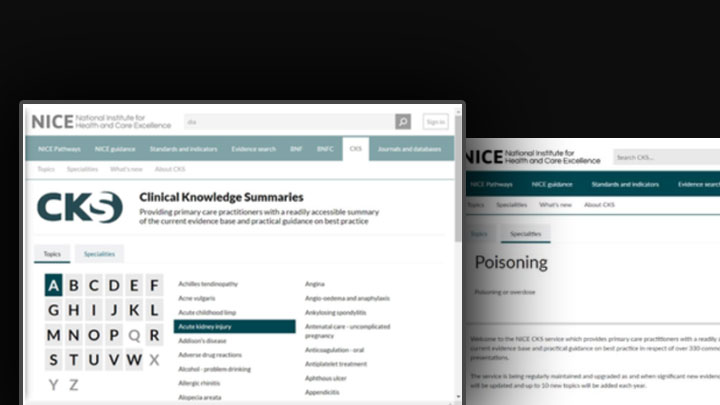
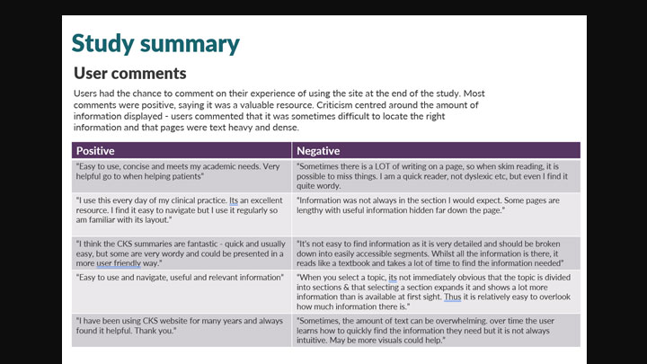
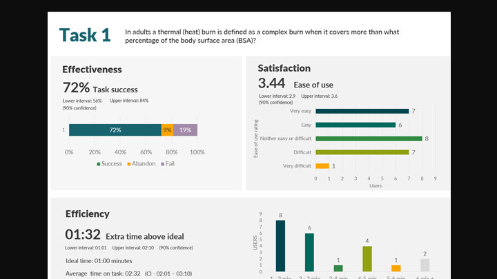
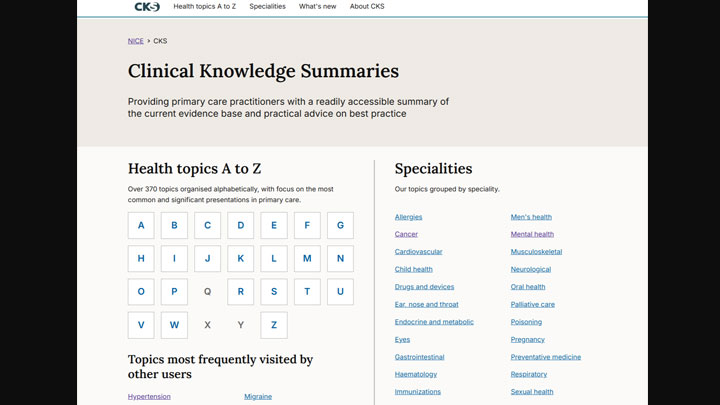
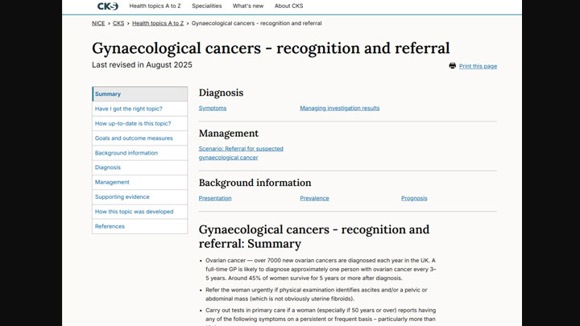
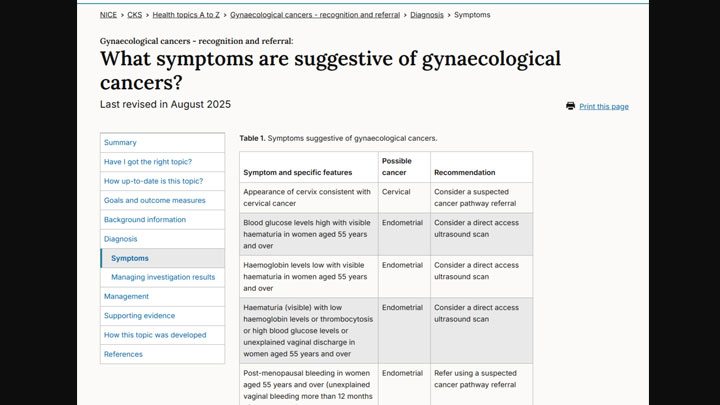

Outcome
The redesign significantly reduced cognitive load and time-to-answer for clinicians using the service. By restructuring the long-form content model and introducing clearer navigation, users could access the clinical guidance they needed in a fraction of the time previously required.
The Challenge
Clinical Knowledge Summaries (CKS), used by over 400k users a month, is a critical resource for UK primary care practitioners, providing readily accessible evidence and practical guidance for clinical decision-making. While the content remained highly valued, previous user research indicated that the site's navigation was inefficient and difficult to use — particularly for time-poor clinicians managing patients in high-pressure environments.
Compounding these usability issues, the legacy codebase and bloated file sizes resulted in excessive load times that further hindered access. In a setting where every second counts, these issues directly impacted the service's ability to support effective, real-time patient care.

My Role
I led the end-to-end redesign of the CKS service, managing a rigorous four-month delivery timeline across the full GDS lifecycle: Discovery, Alpha, Beta, and Live. I held primary responsibility for establishing and managing the design and research project plan, ensuring every phase was grounded in user evidence. My role was hands-on and strategic, encompassing the synthesis of existing research, user journey mapping, and the iterative design of core components validated through usability testing.
Critically, I acted as the lead negotiator with our third-party content provider — successfully advocating for essential technical modifications to their data feed, ensuring the infrastructure could support our performance goals and ambitious UX improvements.


The Approach
I initiated the project with an external horizon scan and a comprehensive heuristic review. I chose this as the starting point to establish a clear baseline and identify immediate usability gaps, which then allowed us to focus 1-to-1 user research on the most critical areas. These sessions revealed that clinicians were frequently overwhelmed by dense content and confused by ambiguous navigation labels.
By identifying their primary goal — retrieving specific clinical advice under intense time pressure — I established a performance baseline through unmoderated benchmarking. This gave us a solid data set to track improvements against and to use in discussions with the content provider.
"By identifying their primary goal — retrieving specific clinical advice under intense time pressure — we could make every design decision in service of that single need."
The project's primary constraints were a tight delivery window and a rigid third-party content feed. Any technical adjustments required careful negotiation to secure the supplier's development resources. I prioritised pain points by balancing user impact against technical feasibility, based on their feedback — transforming a potential bottleneck into a genuine partnership, ensuring our focus areas were in the best interest of both NICE and the supplier.
Simultaneously, I led a restructure of the long-form content, moving away from a high-friction "all-on-one-page" model to distinct, navigable sections. By introducing clear content hierarchies and an "On this page" navigation component, I ensured clinicians could jump directly to relevant information — significantly reducing cognitive load and time-to-answer in clinical settings.



Reflection
We overestimated our ability to change the core experience. Time was spent on design iterations that turned out to be technically unfeasible — including navigation improvements that couldn't be implemented without significant cost implications from the third-party content feed supplier. In future projects, I'd bring those conversations with external providers in much earlier, and with the right decision-makers in the room from the start.
We underestimated how much internal sign-off would slow momentum. Rather than testing quickly and gathering real user feedback, progress stalled waiting for stakeholder alignment. Next time, I'd carve out time earlier to build an evidence base — letting user needs drive the conversation rather than opinion.